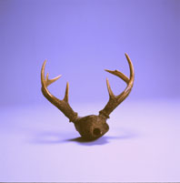
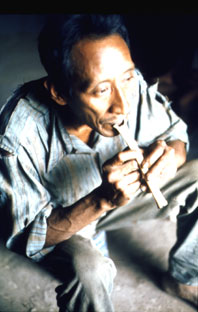
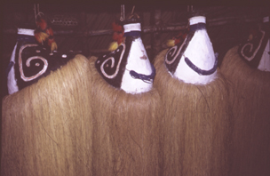
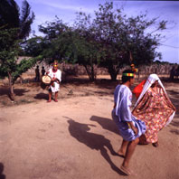

VII.
Manifestaciones
Musicales Indígenas
E’ñepá:
Fiesta
del Guayuco
La iniciación de
los niños de la etnia
E’ñepá
o Panare en el uso de su primer guayuco se festeja con la Fiesta
del
Guayuco
o Katayintö. Las celebraciones y danzas se celebran durante una
determinada
estación seca, realizando a su final la Fiesta del Guayuco.
Sólo
los niños varones de seis a nueve años de edad se inician
en este ritual. Se tocan instrumentos de viento como las flautas
de pan
llamadas Are’re’ y unos clarinetes de tallo hueco, ahora a veces
de
plástico,
hasta de dos metros y medio de largo, los Karamataimë o
Aramótaimö,
que se tocan en pares como macho y hembra. Los niños marchan al
pulso grave de los clarinetes, cubiertos todos con vestidos de
hojas de
palmera tejida.
Hiwi:
Fiesta
del Guarapo
Es un ritual que
celebra la etnia Hiwi o Guajibo,
durante
los meses de mayo y diciembre. Es la celebración mas importante
del año para la cual la comunidad prepara el Guarapo o chicha
llamada
también yarake, bebida hecha a base de jugo de caña de
azúcar
y yuca. En esta fiesta cantan y danzan con sus instrumentos
musicales
llamados
Jiba (flautas de pan) y los Ovevi Mataeto (cráneos de venado), además
de la vistosa maraca shamánica, el Tsitsiíto. Sólo
los hombre tocan las flautas.
Kari’ña:
El
Mare-Mare
Esta
manifestación de los Kari’ña se
puede
ver bajo Mare-Mare
del Carnaval.
Kari’ña:
Akaatompo
Este tipo de
Mare-Mare
es un ritual celebrado el
día
de los difuntos que se efectúa entre el 1 y 3 de noviembre en el
estado Anzoátegui. Es costumbre entre los Kari’ña recibir
la visita de los familiares de los muertos. Los cantos
Akaatompo,
con voz acompañada del Cuatro, recuerdan los mejores momentos
vividos
junto al familiar difunto, quien comparte la celebración
realizada
en su honor a través de los textos improvisados por los
cantantes.
 Saluda a los
presentes y ordena a sus familiares que den buena atención
a los asistentes, invitándolos a compartir los alimentos
preparados
para dicha ocasión. Con los cantos recuerdan constantemente el
motivo
de la celebración a los presentes.
Saluda a los
presentes y ordena a sus familiares que den buena atención
a los asistentes, invitándolos a compartir los alimentos
preparados
para dicha ocasión. Con los cantos recuerdan constantemente el
motivo
de la celebración a los presentes.
Kúrrim:
Iniciación
de las Mujeres
Después de un
mes de ayuno purificador con
vegetales
y frutas
Pemón:
Fiestas
de Parischará y Tukui
Estas fiestas o
bailes
de los Pemón se
celebran
por motivos de regreso de largos viajes, construcción de
viviendas
nuevas o reunión de parientes. En el Parischará o baile
del
jabalí, y en el Tukui o baile de las aves y peces los
Pemón
se adornan el cuerpo con dibujos o se pintan enteramente con
arcilla
blanca,
hasta en el cabello. Utilizan también faldas de hojas largas y
sombreros
de paja. El baile se desarrolla en círculo abierto, colocando la
mano derecha sobre el hombro del que le precede, y tocan al
mismo
tiempo
trompetas de tubos largos de yagrumo, o Kamai, junto con
sonajeros de
hileras
de cáscaras de semillas atados al cuerpo. En el Tukui, el
primero
de la fila hace sonar el tambor Samburá de dos membranas de piel
de tigre o báquiro, e indica el paso hacia adelante o hacia
atrás,
sorpresa que hace que el grupo se divierta al cambiarse la
dirección.
Piaroa:
Fiesta
del Warime
Realizan este ciclo
ceremonial en un lapso de uno a
tres
meses que comprende diferentes actos rituales como desafío a los
espíritus Méri, la mayor parte de ellos de
carácter
maléfico. Esta es la oportunidad en la que se ejecutan todos los
instrumentos musicales, muchos de los cuales son sagrados y
exclusivamente
para uso en las ceremonias. Los mismos son
ejecutados solamente por hombres
y se depositan en una casa especial, lugar en el que también se
construyen los instrumentos. Se visten
con atuendos de palma y máscaras
de animales y hacen sonar las flautas Muo’tsa y las flautas de
cántaro
o Worá, y las flautas de hueso.
Pumé:
Ritual
a la Diosa Kumá
La celebración a
la Diosa-madre lunar
Kumá
de los Pumé, también conocidos como Yaruro, se
efectúa
durante toda la noche en el día de Santa Rosa el 29 agosto,
usualmente
a plena lluvia. La fecha utilizada de un santo cristiano es
parte de la
imposición cultural cristiana, ya que el ritual no tiene nada
que
ver con Santa Rosa. El shamán canta en trance acompañado
de la maraca sagrada durante toda la noche, en forma
responsorial con
el
coro de mujeres y el ritual se complementa con danza. El shamán
puede entonar más de seis mil estrofas durante un ritual, sin
parar
y sin dudar. Las mujeres shamanes continúan durante el
día
la curación de la noche anterior cantando desde sus chinchorros,
ya que los versos y melodías son creación de los
espíritus
para comunicarse con los seres vivos.
Warao:
Fiesta
del Najanamu
En el Delta del
Orinoco, estado Delta Amacuro, los
indígenas
Warao practican este ritual de ofrenda a los Jebus, espíritus de
los karekos o piedras. El Wisidatu, gran sacerdote y médico
realiza
el Najanamu para complacer o aplacar a los espíritus. Durante la
celebración se ejecutan cantos y bailes acompañados
con diversos instrumentos como los Isimoi o pitos y el Hebu
Mataro o
Maraca
shamánica grande.
Wayúu:
Baile
de la Yonna
Es una
manifestación vigente en el grupo
cultural
Wayúu, que también se conoce como los Guajiros, que
habitan
en la región colombo-venezolana de la Guajira, estado Zulia. La
celebración se realiza para la época de
recolección
de las cosechas y como ritual de fertilidad. El Baile de la
Yonna es un
baile de pareja libre donde el hombre que se acompaña con un
tambor
denominado Kaashi, es perseguido por la mujer. Van describiendo
ambos un
círculo grande en un terreno limpio y plano. La mujer
Wayúu
elegantemente da giros abriendo su manta. Durante el desarrollo
del
baile
no se canta, pero se escuchan exclamaciones y gritos tanto del
bailador
como de los espectadores, para darle ánimo al baile.